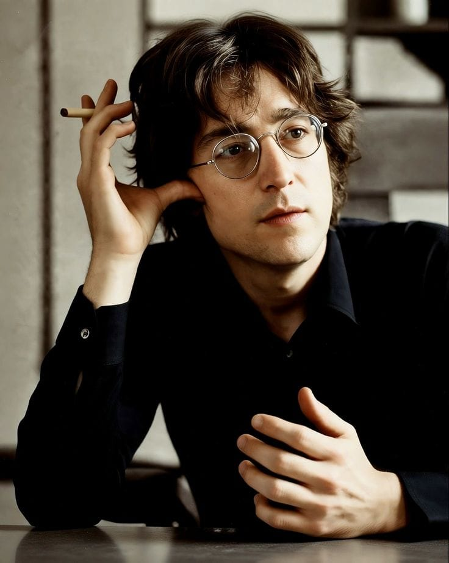

John Winston Ono Lennon (nacido como John Winston Lennon ; 9 de octubre de 1940 – 8 de diciembre de 1980) fue un músico y activista inglés. Alcanzó fama mundial como fundador, colíder vocalista y guitarrista rítmico de los Beatles .
Nacido en Liverpool , Lennon se involucró en la moda del skiffle durante su adolescencia. En 1956, formó The Quarrymen , que se convertiría en The Beatles en 1960. Inicialmente fue el líder de facto del grupo , un rol que gradualmente pareció ceder a McCartney.
Lennon lanzó su álbum debut en solitario John Lennon/Plastic Ono Band y los sencillos que alcanzaron el top 10 internacional " Give Peace a Chance ", " Instant Karma! ", " Imagine " y " Happy Xmas (War Is Over) ".
John Lennon fue asesinado el 8 de diciembre de 1980, a los 40 años, al recibir cuatro disparos por la espalda.. El ataque ocurrió en la entrada de su residencia, el edificio Dakota en Nueva York, cuando regresaba con Yoko Ono de una sesión de grabación. El agresor fue Mark David Chapman, quien le disparó cinco veces.